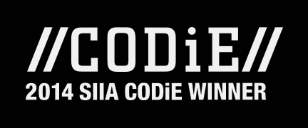
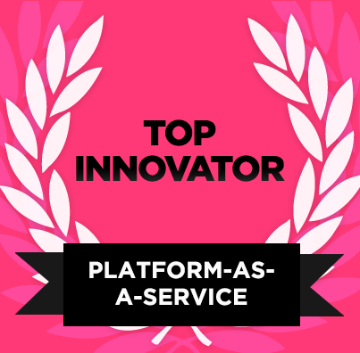

Industry Recognition and Awards
You already know OpenShift is the best place to develop, host, and scale your apps. Did you know it's also the winner of several platform as a service (PaaS) awards? Check them out.
2015 Technology of the Year
OpenShift received InfoWorld's 2015 Technology of the Year Award. The annual awards identify the best and most innovative products in the IT landscape.
2014 Top Pick
OpenShift was named as a 2014 top pick for best open source application development tools and again named top pick in best open source data center and cloud software.
2013 Top Pick
OpenShift Origin was named one of InfoWorld's 2013 top picks in open source data center and cloud platforms, infrastructure, and management tools.
Cloud Innovation Finalist
OpenShift was named as a finalist for the 2014 Cloud Innovation Awards in Cloud Services for the Enterprise.
Best in Cloud Computing
OpenShift was awarded Best in Cloud Computing at the 2014 American Technology Awards.

Best Cloud Platform
OpenShift is a proud winner of the CODiE 2014 best Cloud Platform as a Service award.

Top Innovator
OpenShift wins Top Innovator for Platform-as-a-Service (PaaS) by the DeveloperWeek 2014 Innovator Awards.
Visionary
Red Hat named a Visionary in Gartner’s January 7, 2014 Magic Quadrant for Enterprise Application Platform as a Service.
Gold Winner
OpenShift Enterprise was named the Gold Winner in the Platform as a Service category by Network Products Guide.

On-Premise Leader
Red Hat named a Leader in Gartner’s June 23, 2013 Magic Quadrant for On-Premises Application Platforms.
Note: Gartner does not endorse any vendor, product or service depicted in its research publications, and does not advise technology users to select only those vendors with the highest ratings. Gartner research publications consist of the opinions of Gartner's research organization and should not be construed as statements of fact. Gartner disclaims all warranties, expressed or implied, with respect to this research, including any warranties of merchantability or fitness for a particular purpose.
Tags: Awards